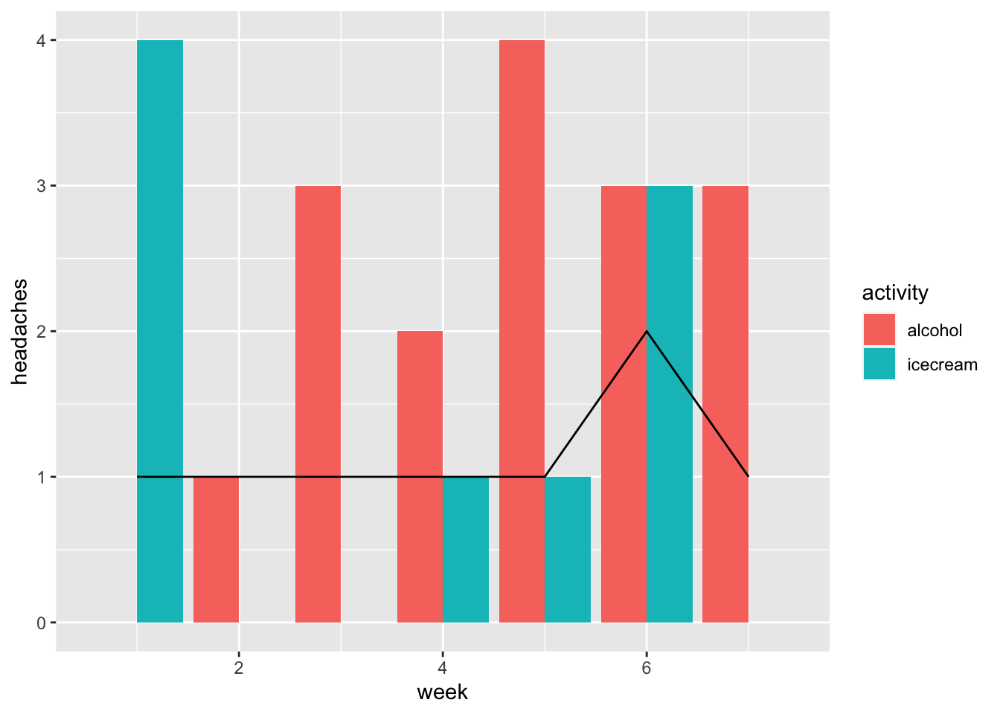

6 Applications
Load the data we created in our Chapter 4 example.
Code
x <- readr::read_csv("./headache-variables.csv", show_col_types = FALSE)With my 14 weeks of data, we can do a few basic calculations:
How frequent are my headaches? Simply total the number of headaches and divide by number of days:
Code
# headaches per day
sum(x$headache) / length(x$headache)[1] 0.081632656.1 Hypothesis
With the data collected and in a nice dataframe format, we can start to ask what might be driving the headaches. One of the first suspected culprits might be something that I eat.
Based on the data collected so far, can I make any guesses about what might be driving my headaches?
The most obvious place to check is whether I see any patterns on the days when I have headaches. Let’s filter for headache days only:
Code
x %>% filter(headache) %>% kableExtra::kable() %>%
kableExtra::kable_styling(bootstrap_options = c("striped", "hover", "condensed"))| date | headache | icecream | z | wine |
|---|---|---|---|---|
| 2022-07-03 | TRUE | TRUE | 8.478644 | 0 |
| 2022-07-18 | TRUE | FALSE | 6.880779 | 0 |
| 2022-07-25 | TRUE | FALSE | 6.909671 | 0 |
| 2022-08-12 | TRUE | FALSE | 7.278277 | 0 |
| 2022-08-20 | TRUE | FALSE | 7.797994 | 0 |
| 2022-09-05 | TRUE | TRUE | 8.385846 | 0 |
| 2022-09-08 | TRUE | FALSE | 5.849701 | 0 |
| 2022-09-25 | TRUE | FALSE | 7.679254 | 0 |
But maybe the headache takes a day or two to kick in. We can divide the data by week and see if we can spot any patterns in headache frequency:
Code
x %>% group_by(week = ntile(date,7)) %>%
summarise(headaches = sum(headache),
alcohol = sum(wine),
icecream = sum(icecream)) %>% kableExtra::kable() %>%
kableExtra::kable_styling(bootstrap_options = c("striped", "hover", "condensed"))| week | headaches | alcohol | icecream |
|---|---|---|---|
| 1 | 1 | 0 | 4 |
| 2 | 1 | 1 | 0 |
| 3 | 1 | 3 | 0 |
| 4 | 1 | 2 | 1 |
| 5 | 1 | 4 | 1 |
| 6 | 2 | 3 | 3 |
| 7 | 1 | 3 | 0 |
Buy simply eye-balling the data this way, you might see a pattern. For example, you might spot a week or two with an unusually large number of headaches and notice those weeks are accompanied by an unusually large consumption of some particular food.
But how do you know you’re not just guessing? What looks like a pattern might be a coincidence. To find out with more certainty, we will apply some statistics.
6.2 T-Testing
Hint: an Excel version of this exercise is in Section 11.1 .
The simplest test is called a “T Test”. This is a formula that can compare two equal-sized lists of numbers and return the probability that any differences between the two are the result of chance.
What are the chances that the number of headaches per week is related to the amount of ice cream I eat per week?
If there were a relationship between ice cream and headaches each week, I’d expect that over the weeks in this period, the total number of headaches and the total number of ice cream days should be roughly equal.
Code
x_week <- x %>% group_by(week = ntile(date,7)) %>%
summarise(headaches = sum(headache),
alcohol = sum(wine),
icecream = sum(icecream))
x_week %>% kableExtra::kable() %>%
kableExtra::kable_styling(bootstrap_options = c("striped", "hover", "condensed")) | week | headaches | alcohol | icecream |
|---|---|---|---|
| 1 | 1 | 0 | 4 |
| 2 | 1 | 1 | 0 |
| 3 | 1 | 3 | 0 |
| 4 | 1 | 2 | 1 |
| 5 | 1 | 4 | 1 |
| 6 | 2 | 3 | 3 |
| 7 | 1 | 3 | 0 |
Code
with(x_week, t.test(headaches,icecream))[["p.value"]][1] 0.8254265By convention, a p-value less than 0.05 (that is, less than 5\%) is considered statistically significant. While this is not a hard and fast rule, it’s often a good place to start. A p-value greater than this is almost certainly due to chance.
6.3 Data visualization
The first step in a more sophisticated analysis is to plot the data to see if we can spot any particular patterns.
Code
x_week %>% pivot_longer(names_to = "activity",
values_to = "amount",
cols = alcohol:icecream ) %>%
ggplot(aes(x=week,y=headaches)) +
geom_bar(aes(x=week,y=amount, fill = activity),
position = "dodge",
stat = "identity") +
geom_line(aes(x=week,y=headaches))